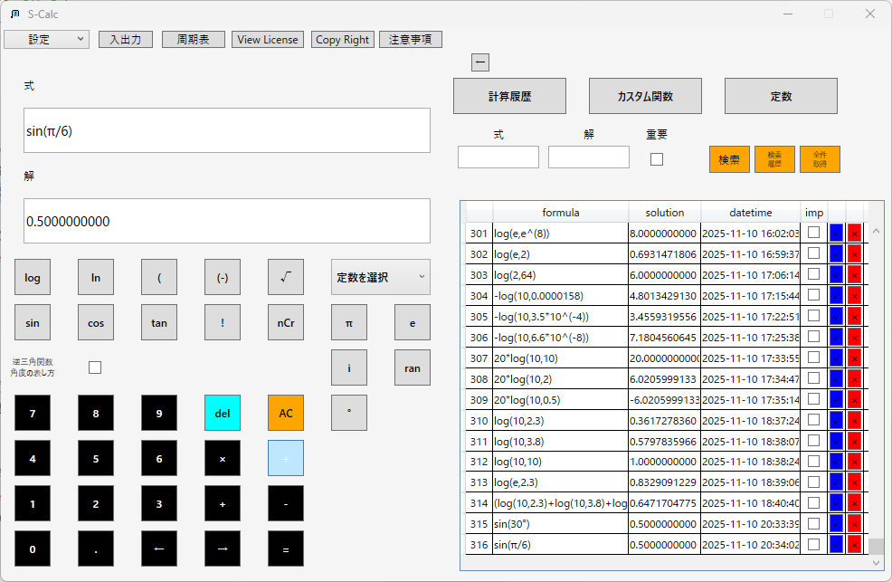
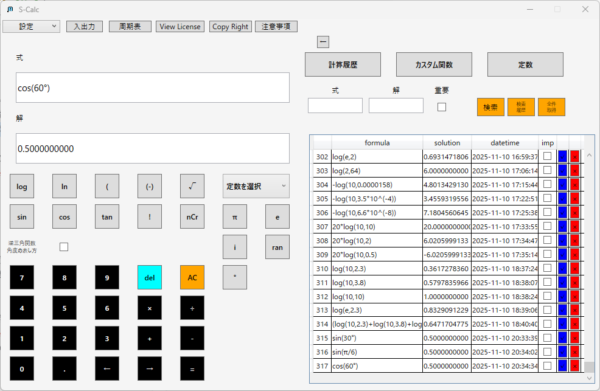
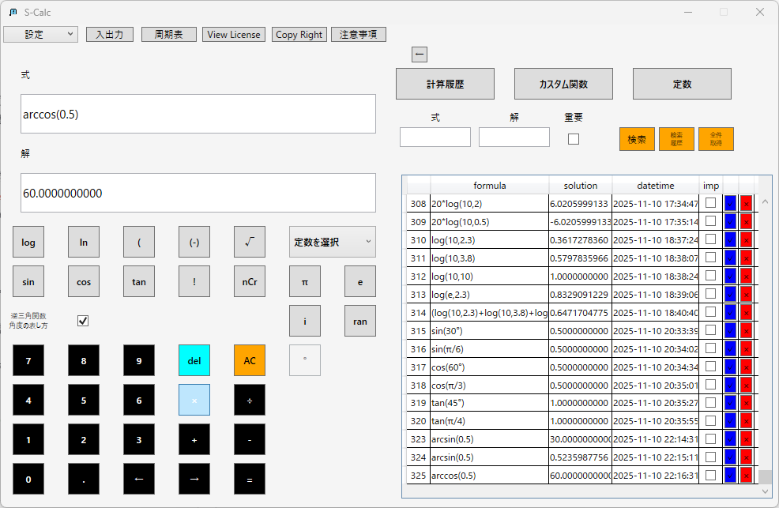
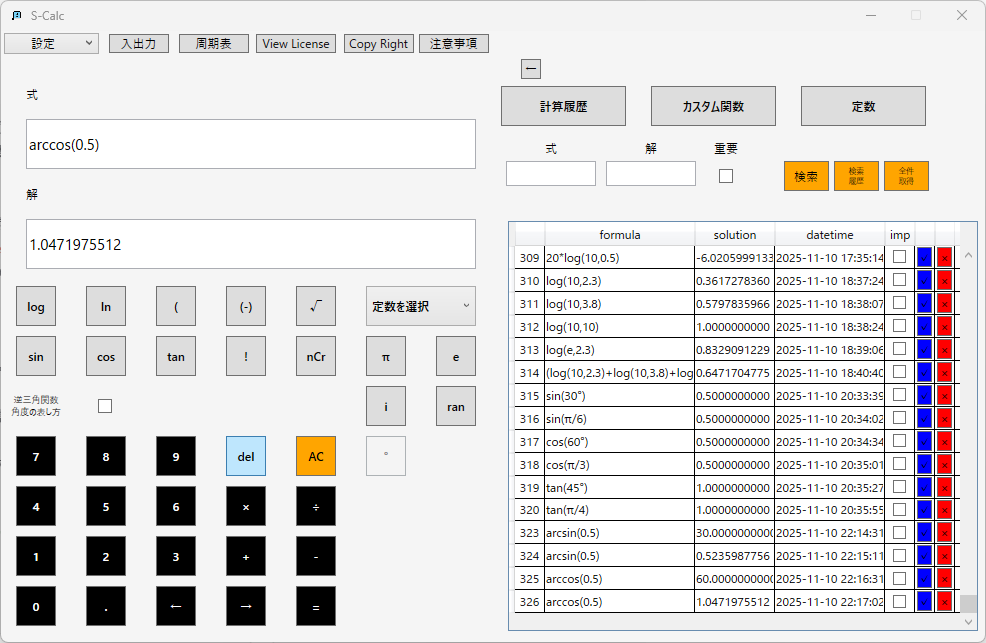
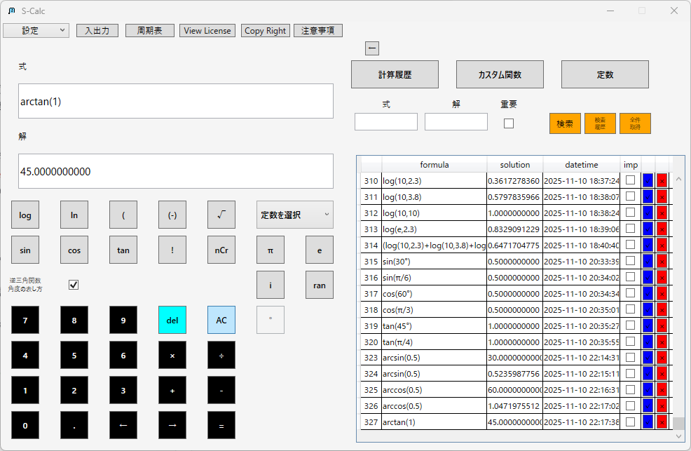
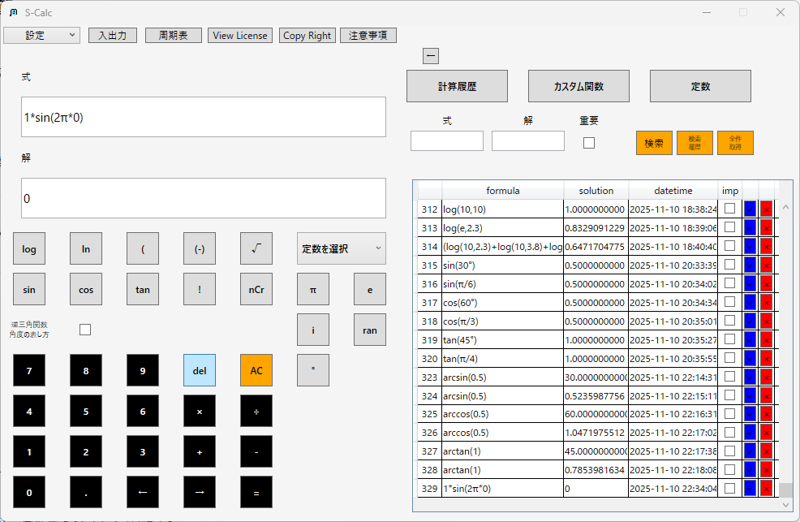
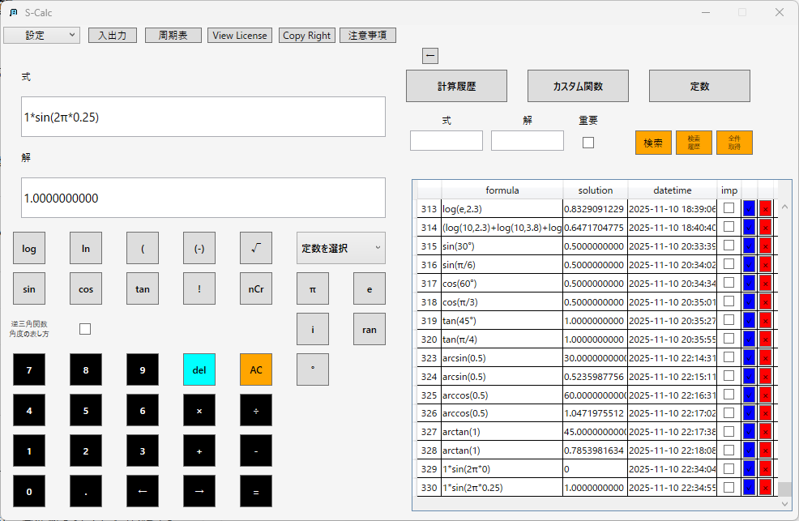
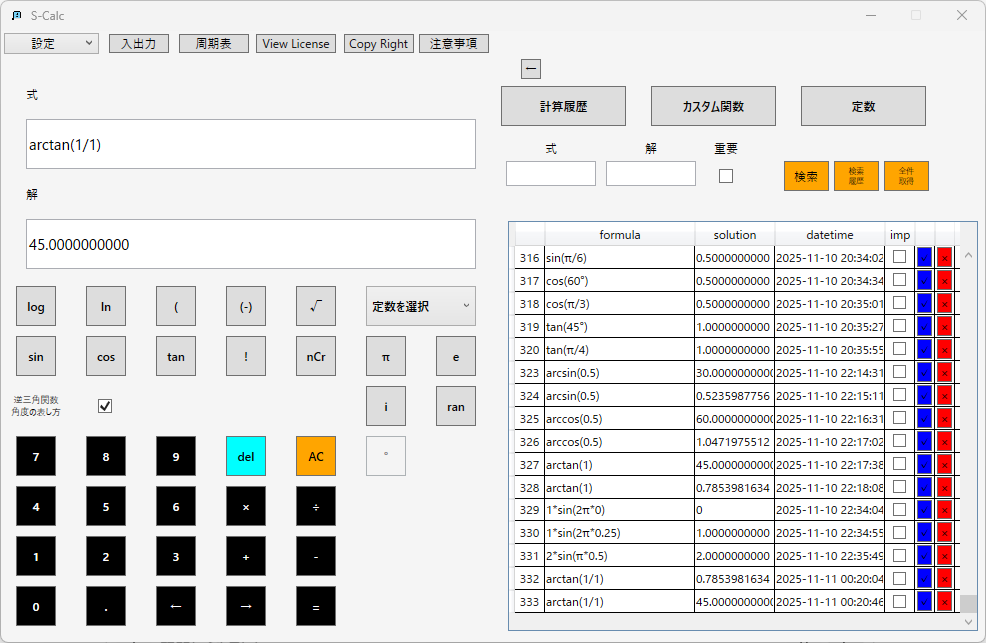
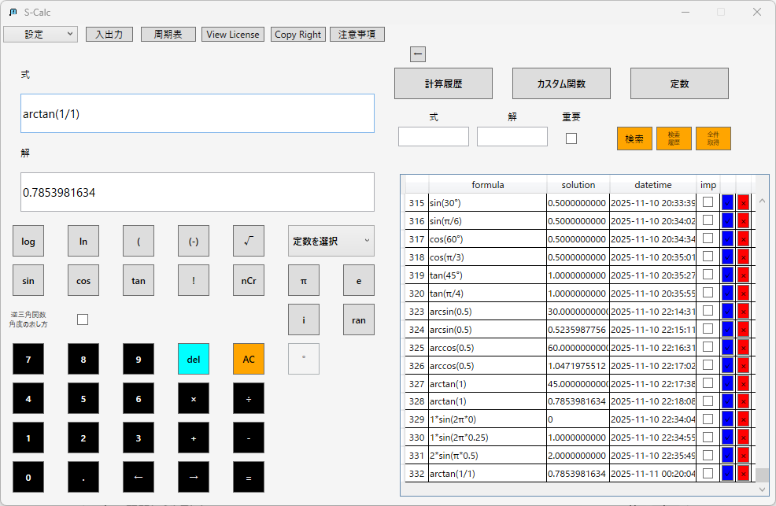
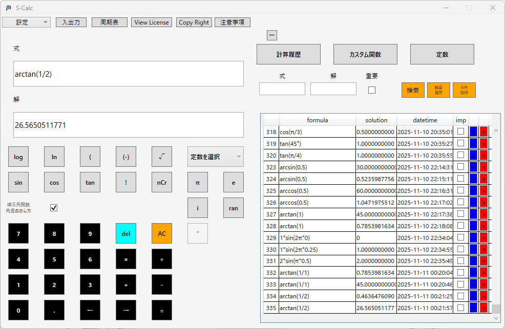

三角関数（sin, cos, tan）
S-Calcは、度数法と弧度法の両方に対応した三角関数を利用する。
基本構文
サイン（正弦）：

コサイン（余弦）：

タンジェント（正接）：
角度は度数入力時に「°」ボタンを押下することで度数法を指定することが出来る。
「°」ボタンを押下しない場合、すべて弧度法として計算を行う。
逆三角関数（arcsin,arccos,arctan）
逆三角関数の解は三角関数下のチェックボックスから「度数法」「弧度法」を選択することが出来る。
基本構文
アークサイン（逆正弦）：
アークコサイン（逆余弦）：


アークタンジェント（逆正接）：

応用例
波動計算：sin(ωt)
波動・振動現象では、位置や時間による変化を- πはS-Calcで自動認識される円周率定数。
- sinはデフォルトで弧度法（Radian）を使用。カッコ内に"°"を用いることで度数法として計算することも可能。
ベクトルの角度解析：tan^(-1)(y/x)
2次元平面上でベクトル(x,y)がx軸となす角θは建築構造計算：斜面角度・力分解
斜面や梁にかかる力を成分に分ける際、三角関数を使う。
y = Asin(ωt)
のように表す。
ここでは「ω：角周波数（rad/s）」「t：時間（s）」「A：振幅」。
【計算例】


補足
θ = tan^(-1)(y/x)
で表す。
「建築」「機械」「ロボティクス」「電気回路」など幅広く利用される。
【計算例】



例えば斜面角θ=30°で、物体にかかる重力mg=100Nの場合：